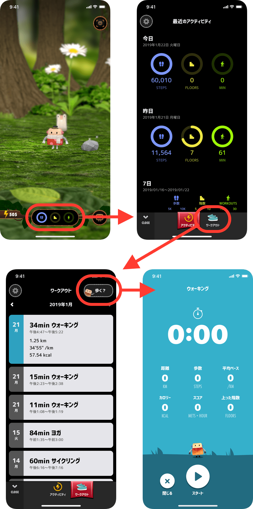

「歩数」や「上った階数」は自動的に計測されますが、「ワークアウト」だけは、ご自身でスタート・ストップして計測していただく種類のアクティビティです。
計測方法は大きく分けて2種類あります。
1. メイン画面下部の今日のゴール進捗をタップ
2. 下タブの「ワークアウト」をタップ
3. 右上の「歩く？」ボタンをタップ
4. ウォーキング計測画面

Hopsは、Appleの「ヘルスケア」からデータを読み込んでいるため、ヘルスケアに連携された他社アプリから記録されたワークアウトもHopsから参照することができます。
ランニングや各種トレーニング、ヨガなど、たくさんのアプリにヘルスケア連携の機能があり、連携すると、「ヘルスケア」にワークアウトの内容が記録されます。
ぜひ連携してお好きなワークアウトで目標達成を目指してください。
連携方法は、それぞれアプリによって異なりますが、アプリの設定画面にて「Apple Health」や「ヘルスケア」などの項目から設定できることが多いです。以下に一部をご紹介します。
※ 最新の情報は各アプリを参照してください